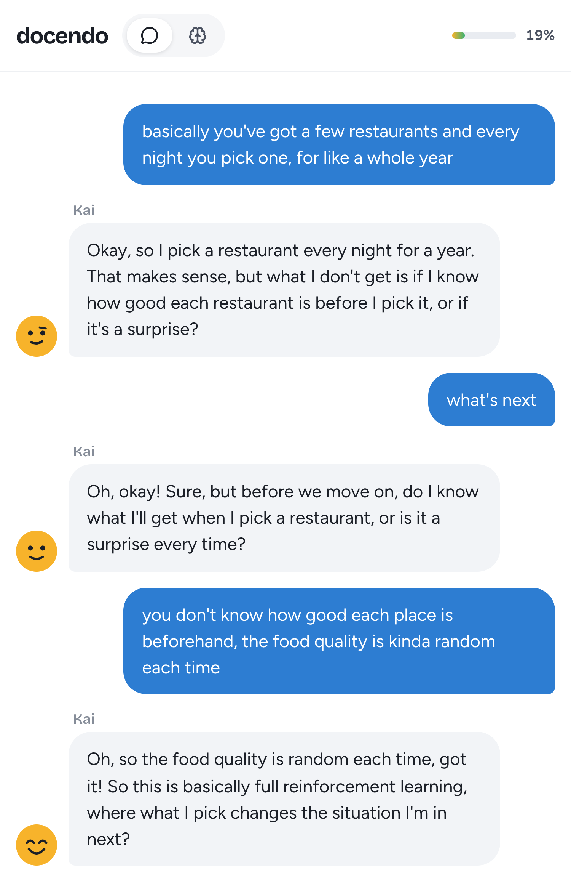
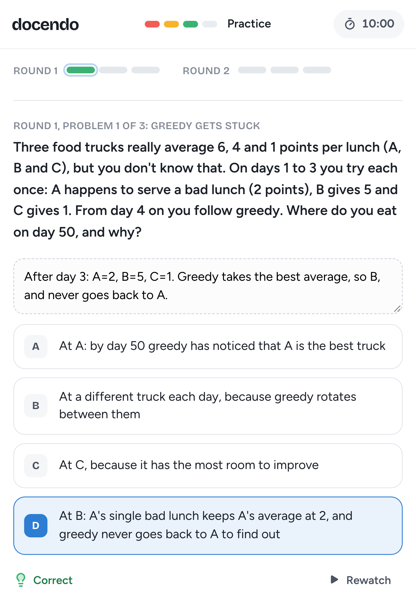

Learning by teaching an AI classmate, and then watching it use what you taught
bandits2026Our lesson is about multi-armed bandits: repeated choices between options with an unknown average payoff, such as which restaurant to eat at. Each choice pays something and also tells you about that option, so exploiting the option that looks best competes with exploring the others. Participants are EPFL engineering and computer science students who know averages, probabilities and confidence intervals but not bandits; students who took a reinforcement learning course are excluded.
Our C2 draft had three goals, too many for 30 minutes, so following the TA and the C2 reviewers we kept one, a slightly modified LG2:
Transfer the decision rules of greedy, ε-greedy and UCB to a situation the learner has not seen, and predict which option each rule picks, with a justification of how the rule explores.
Practice and test items cover why greedy can lock onto a worse option after one unlucky try (q03 to q04), how often ε-greedy picks its favourite (q05 to q07), and why a UCB bonus shrinks with every try, so that UCB moves on from an option that is only average (q08 to q10).
A session takes about 40 minutes, the lesson itself about 28. Only chapter 3 differs between the two conditions.
| Chapter | Time | What the learner does |
|---|---|---|
| 0 Pretest | 2 min | Two background questions and three items on prior knowledge, such as confidence interval width. |
| 1 Watch | 8 min | One lesson cut from two YouTube videos (ritvikmath, DataMListic). |
| 2 Teach Kai | ≈ 10 min | Explains the lesson to Kai, an AI classmate who missed it, until Kai feels ready. |
| 3 Practice | 10 min | Six problems in two rounds. Recursive feedback: Kai solves them from what it was taught, and a light shows the learner whether Kai is right; after a red light the learner finds Kai's faulty step and may reteach it before one retry. Direct feedback: the learner solves them, writing down the working, and the same light shows whether they are right, with one retry. |
| 4 Final test | ≈ 10 min | Ten multiple choice items in new situations; worked solutions afterwards. |
Teaching is identical in both conditions (Figure 2, left). Kai runs on Gemini 2.5 Flash but may not know the topic. After each message a judge model decides which of the lesson's thirteen facts the learner explained, quoting the learner's words; these quotes, mistakes included, form Kai's notebook, which is all Kai knows. A filter blocks lesson words the learner has not used, since learners stop building knowledge once a tutee seems to know the answers (Jin et al., 2024). Kai feels ready at 80% of the facts (50% after eight minutes) and offers a common misconception to correct; after an attempt, a button replays the matching moment of the video.
Teaching drives learning through the protégé effect (Chase et al., 2009), most when tutors repair and extend their explanations rather than recite them (Roscoe & Chi, 2007). In the lecture's terms, this chapter combines teaching and self explanation, with Kai's questions as scaffolding and the replay as just in time telling.
Still open: how much Kai asks. Now each reply ends with a question about a missing fact, and such tutee questions foster knowledge building (Roscoe & Chi, 2008; Shahriar & Matsuda, 2023). The alternative, like the pupil in Experiment 1 of Okita and Schwartz (2013), only acknowledges the answers to four fixed questions, which keeps question quality constant. The pilot decides, and both conditions will use the same version.
Okita and Schwartz (2013) found that tutors learn from watching their pupil use what they taught, which they call recursive feedback. In their Experiment 2, students taught logic rules to an agent, Moby, and watched it play a game in which every move was marked right or wrong; a control group played the same game with the same marks. The Moby group did better on a later test (d = 0.75). We replicate this, as far as we know for the first time, with an LLM tutee, which unlike Moby can apply whatever a learner said to a new problem.
Procedure. Kai solves each practice problem step by step from its notebook alone, so a fact the learner never taught, or taught wrongly, makes a step go wrong in the same way (Figure 1). A light shows only whether the answer is right. The learner clicks the step they think is faulty, Kai shows which of their statements it used, and the learner may send one correction before Kai tries again.
when it explores it goes for the restaurant it has visited the least.
Keeping Kai honest. LLM student simulators tend to fall back on their own knowledge, especially after a correction (Do, Sonkar & Sachan, 2026). So the solver sees only the notebook and must treat everything else as unknown, an explicit constraint of the kind that beat novice personas (Miller & Bosch, 2026); it never sees its marks, and a filter checks every step for untaught lesson words. If the model fails, a fallback builds Kai's attempt from the notebook.
Why it should help. In the lecture's terms, recursive feedback joins teaching and feedback: the marks concern the learner's own reasoning, the level at which feedback works best (Hattie & Timperley, 2007), and a wrong step caused by a misconception works as undoing. Kai works on its own, so the learner must teach rules that hold in general. Since the mistake is Kai's, it can be examined without feeling judged (Chase et al., 2009), and errors are easier to spot in someone else's reasoning (Okita, 2014).
The learner solves the same problems in the same time, with the same light and retry, and writes down their working, like the control group in Experiment 2 (Figure 2, right). This control is strong on purpose, since answering yourself is retrieval practice (Koh, Lee & Lim, 2018). In both conditions practice gives only right or wrong marks, as in Experiment 2, and worked solutions follow the final test: explanations usually help more (Moreno, 2004) and would do for everyone what recursive feedback should do.


Sessions run in the browser without accounts; each participant's access code sets their condition, in random balanced blocks of four. The pretest flags students with a reinforcement learning course and measures prior knowledge: one item on confidence intervals, the idea behind UCB's bonus, one on an expected payoff and one on regret.
Hypothesis and test. The recursive feedback group scores higher on the final test: ten multiple choice items that test each principle in a new setting, mostly asking for the pick and the reason, with wrong options that match misconceptions. The pilot tunes difficulty towards half correct to avoid a ceiling.
Process data and manipulation checks. We log every message, judge verdict, notebook state, step of Kai and answer, and Kai's understanding after teaching shows whether both groups taught equally well. As the TA suggested, an independent model checks Kai's replies and steps for content not in its notebook; we report this leak rate and rerun the analysis without leaked problems.
Power. Detecting the original d = 0.75 with 80% power needs about 29 participants per condition (22 one sided). With the 15 to 20 we can recruit, power is about 0.5 to 0.75, likely less in our shorter, LLM based setting, so we report effect sizes with intervals.
| Topic | Decision | Fallback or open |
|---|---|---|
| Study design | Replicate Experiment 2, which separates recursive feedback from feedback as such and has not been replicated | Experiment 1 (watch Kai answer versus prepare again, d = 1.3), already replicated (Okita et al., 2013) |
| Learning goal | One goal across the three rules | Narrow to UCB, keeping greedy and ε-greedy as contrasts or skipping them completely |
| Preparation | 8 minute video covering the setting, lock in, ε-greedy's random pick and UCB's bonus | Our own text, or the Academic Gamer video with less mathematical questions |
| Practice | Six problems, two rounds, one retry, marks only | Kind, number and difficulty of problems; a formula sheet for both conditions |
The prototype runs both conditions with logging; with the access code, a switch on the practice page shows either. Next we refine both for a pilot with two or three people, test kinds of exercises, difficulty levels and practice material, and settle how much Kai asks.
Chase, C. C., Chin, D. B., Oppezzo, M. A., & Schwartz, D. L. (2009). Teachable agents and the protégé effect: Increasing the effort towards learning. J. of Science Education and Technology, 18(4), 334 to 352.
Do, H., Sonkar, S., & Sachan, M. (2026). Simulating students or sycophantic problem solving? On misconception faithfulness of LLM simulators. arXiv:2605.12748.
Hattie, J., & Timperley, H. (2007). The power of feedback. Review of Educational Research, 77(1), 81 to 112.
Jin, H., Lee, S., Shin, H., & Kim, J. (2024). Teach AI how to code: Using large language models as teachable agents for programming education. CHI 2024.
Koh, A. W. L., Lee, S. C., & Lim, S. W. H. (2018). The learning benefits of teaching: A retrieval practice hypothesis. Applied Cognitive Psychology, 32(3), 401 to 410.
Miller & Bosch (2026). Prompting for teachability: Designing novice personas in LLMs for learning by teaching contexts. LAK 2026.
Moreno, R. (2004). Decreasing cognitive load for novice students: Effects of explanatory versus corrective feedback in discovery based multimedia. Instructional Science, 32, 99 to 113.
Okita, S. Y. (2014). Learning from the folly of others: Learning to self correct by monitoring the reasoning of virtual characters. Computers & Education, 71, 257 to 278.
Okita, S. Y., & Schwartz, D. L. (2013). Learning by teaching human pupils and teachable agents: The importance of recursive feedback. J. of the Learning Sciences, 22(3), 375 to 412.
Okita, S. Y., Turkay, S., Kim, M., & Murai, Y. (2013). Learning by teaching with virtual peers and the effects of technological design choices on learning. Computers & Education, 63, 176 to 196.
Roscoe, R. D., & Chi, M. T. H. (2007). Understanding tutor learning: Knowledge building and knowledge telling in peer tutors' explanations and questions. Review of Educational Research, 77(4), 534 to 574.
Roscoe, R. D., & Chi, M. T. H. (2008). Tutor learning: The role of explaining and responding to questions. Instructional Science, 36(4), 321 to 350.
Shahriar, T., & Matsuda, N. (2023). What and how you explain matters: Inquisitive teachable agent scaffolds knowledge building for tutor learning. AIED 2023.
Use of AI. Claude Code and Claude helped with the prototype, literature and drafting; Kai runs on Gemini 2.5 Flash. The decisions are ours; each member's AI logs are attached.